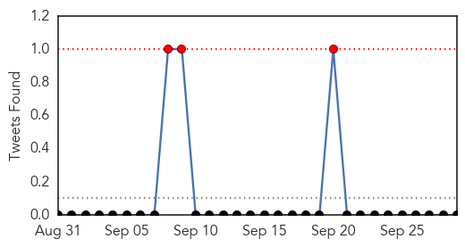
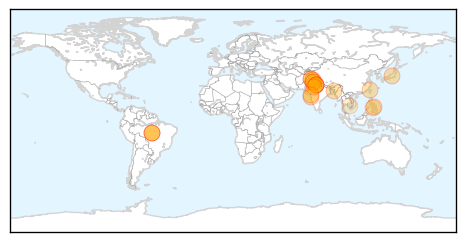

30 Day Trends
Web: 16 alerts, 4 warnings
Twitter: 3 alerts, 0 warnings
Top Articles:
- 0.998
- Dengue virus outpacing control efforts
- 0.994
- With 25 dead, dengue threat remains
- 0.994
- Dengue is an epidemic: Delhi doctors say its outbreak is far worse than what figures suggest : India, News
- 0.987
- 'It's an epidemic': Delhi doctors say dengue outbreak is far worse than figures suggest and call for urgent action
- 0.985
- South Asia grapples with dengue
- 0.983
- Results for potential mosquito-borne virus expected Friday
- 0.972
- Another 152 tested positive during Eid holidays taking tally to 773
- 0.969
- Around 2 lakh houses in Delhi found positive for mosquito breeding, no. of cases reach 5,982 in September alone
- 0.968
- 19 cases of dengue reported from Jammu in one month
- 0.964
- CGHS centres open for all
- 0.963
- 32 fresh cases take dengue figure to 466
- 0.956
- Effect of dengue minimal in northeast India: Experts
- 0.955
- Risk of dengue fever looms large
- 0.952
- Dengue, encephalitis outbreak in Tripura
- 0.951
- Dengue claims 5 more lives in Delhi
- 0.937
- Tainan dengue cases soar, typhoon poses problem
- 0.930
- Cebu City starts misting in five dengue-stricken barangays
- 0.910
- Fever not so rampant in city
- 0.868
- Possible Zik-V case being probed by health ministry
- 0.865
- MCDs yet to catch up with dengue stats
- 0.865
- Health Ministry Probes Potential Mosquito-borne Viral Illnes
- 0.693
- Humanitarian grounds should compulsorily be included in health schemes
- 0.667
- Johor battling smog and rise in dengue cases - Nation
- 0.659
- Dengue: Chandigarh caps test rates, private players pay little heed
- 0.657
- Philstar Mobile
- 0.567
- On World Rabies Day, a Call for Cooperation
- 0.525
- Punjab CM concerned over increase in number of dengue patients
Top Tweets:
-
No tweets found for Sep 29, 2015
Web/News Articles

Tweets
Article Locations
Article Confidences